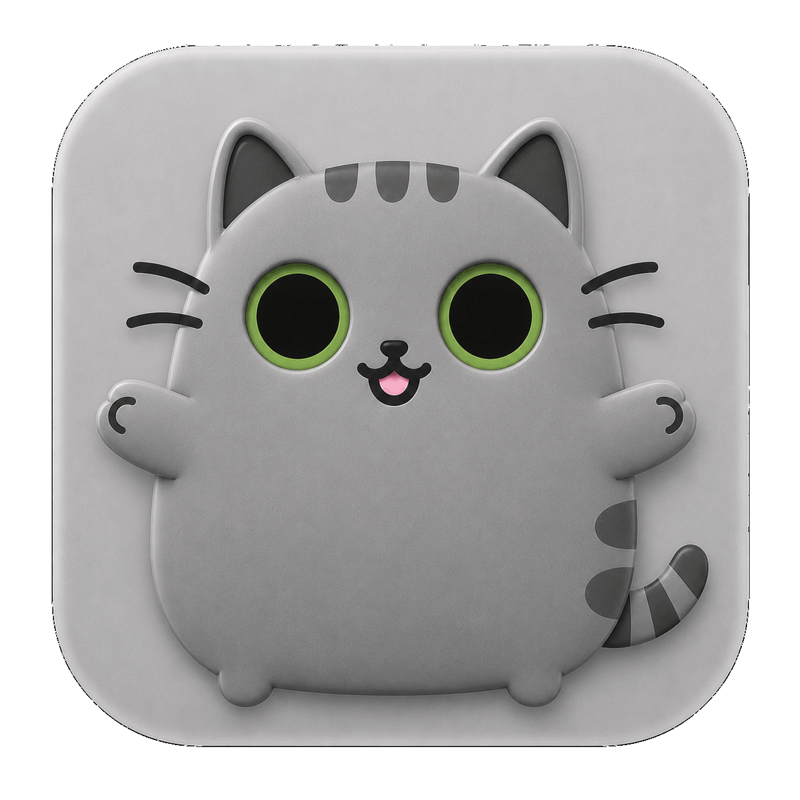
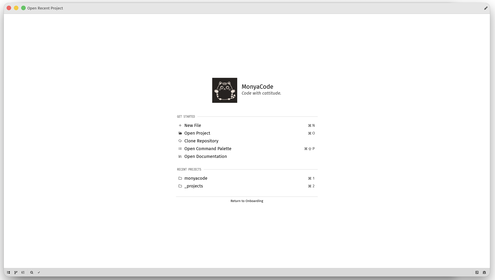
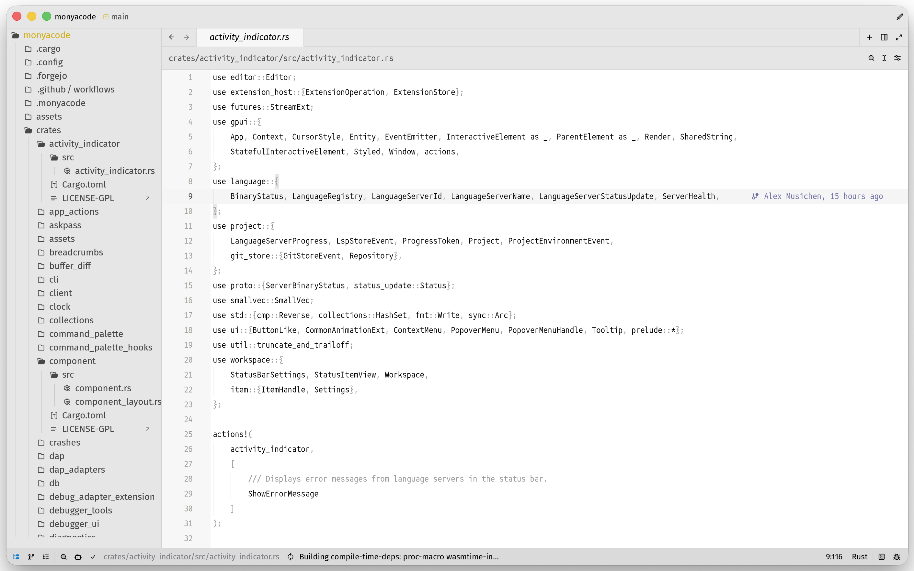
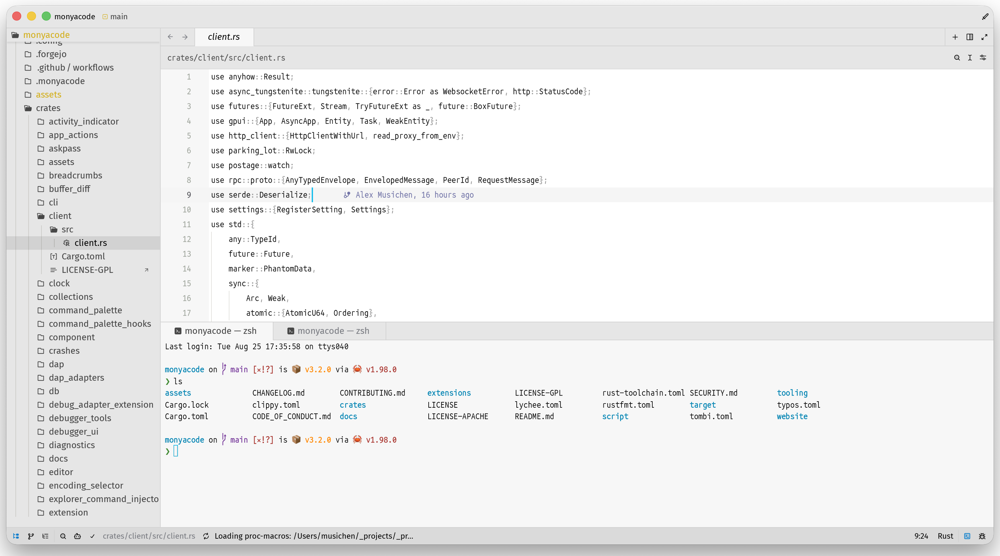

Code with
cattitude.
MonyaCode is a fast, native Rust editor for developers who want a focused workspace without telemetry, subscriptions, or distractions.

Quiet tools. Serious claws.
A focused welcome screen when you arrive, and a spacious editor when you get to work.



Download
Release downloads are served directly from GitHub. The latest release is the source of truth.
Built for focused work
Native performance
Rust and GPU-accelerated UI keep the editor responsive while large projects stay open.
Language intelligence
Language servers provide completion, diagnostics, rename, go-to definition, formatting, and code actions.
Git, close at hand
Browse changes, stage files, inspect history, resolve conflicts, and commit without leaving the workspace.
Terminal and tasks
Run shells, build commands, tests, and project tasks in integrated terminal panes with the current project context.
Debugging and REPL
Use DAP debuggers and interactive REPL workflows alongside the code you are inspecting.
Modes and themes
Shape the editor with Vim or Helix modal editing, keymaps, themes, icon themes, and extensions.
Documentation, inside the editor
The complete repository documentation is available below - all 128 Markdown guides, grouped, searchable, and rendered here instead of sending you away to a directory listing.
One workspace, many workflows
Explore
Open a folder, search across buffers, jump through symbols, and use the outline to understand unfamiliar code.
Build
Keep terminal sessions, task output, diagnostics, and source files visible together while you iterate.
Ship
Review Git changes, run tests, debug failures, and prepare commits with fewer context switches.
Quick start
Clone the source and build with the pinned Rust toolchain:
git clone https://github.com/monyacode/monyacode
cd monyacode
cargo run --releaseCommunity and source
MonyaCode is open source and welcomes careful, focused contributions.